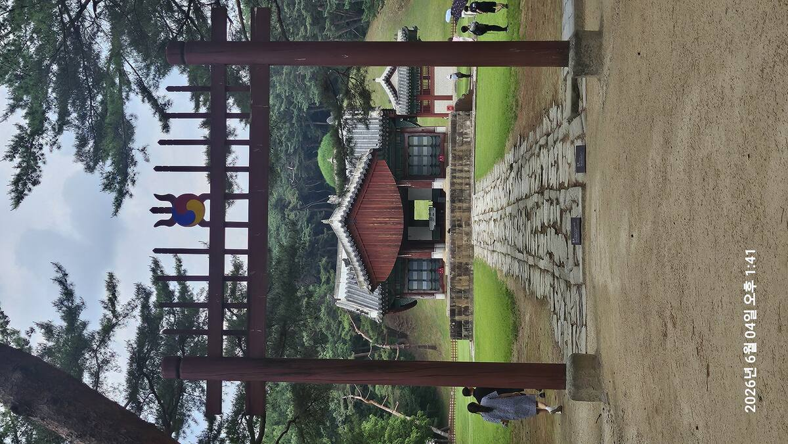
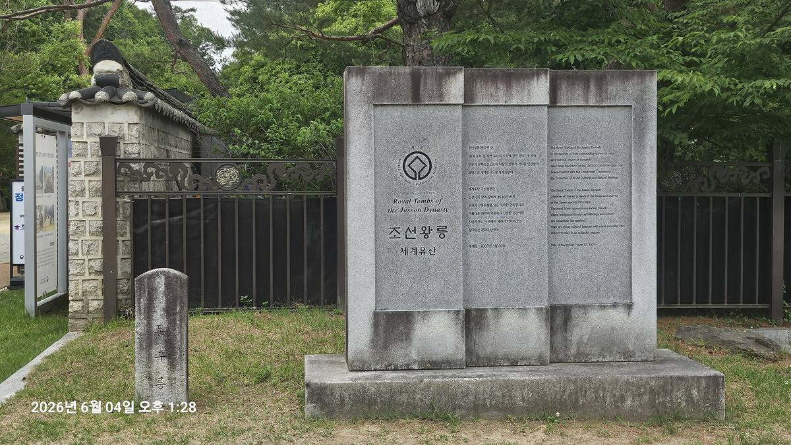
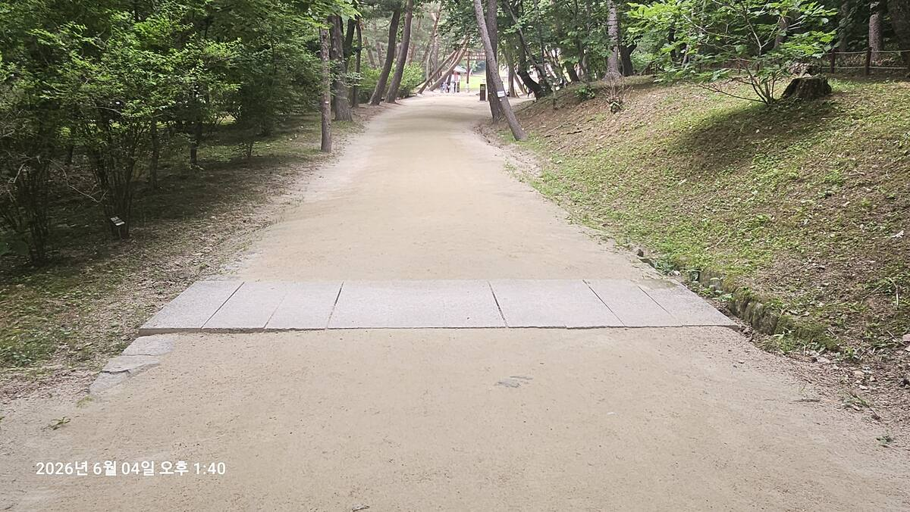
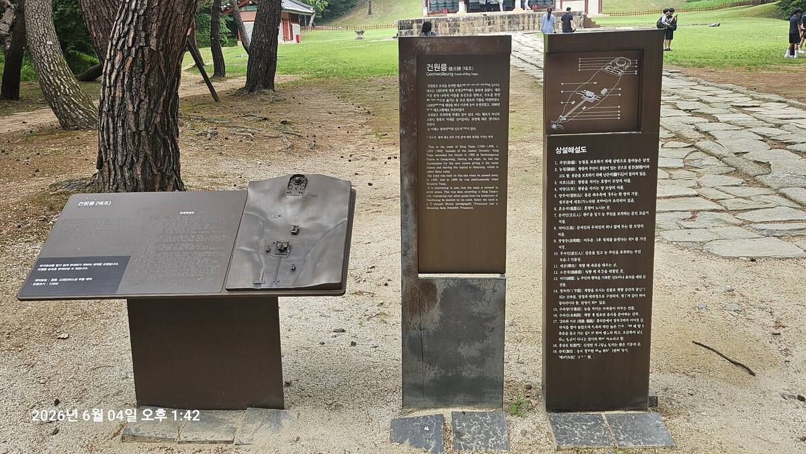
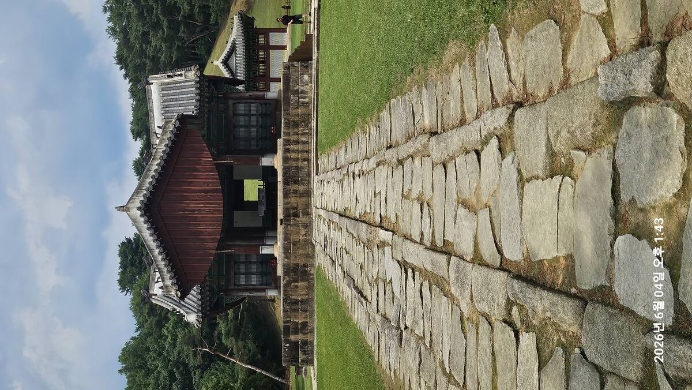
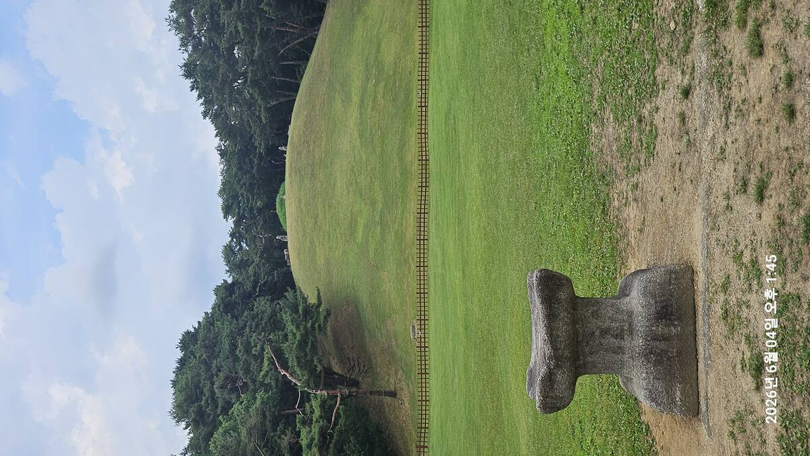
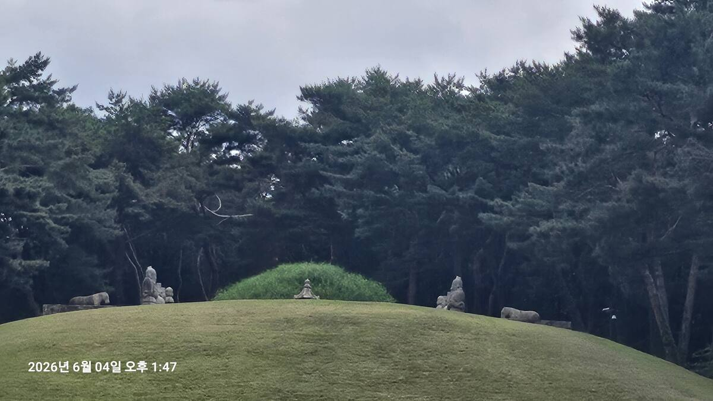
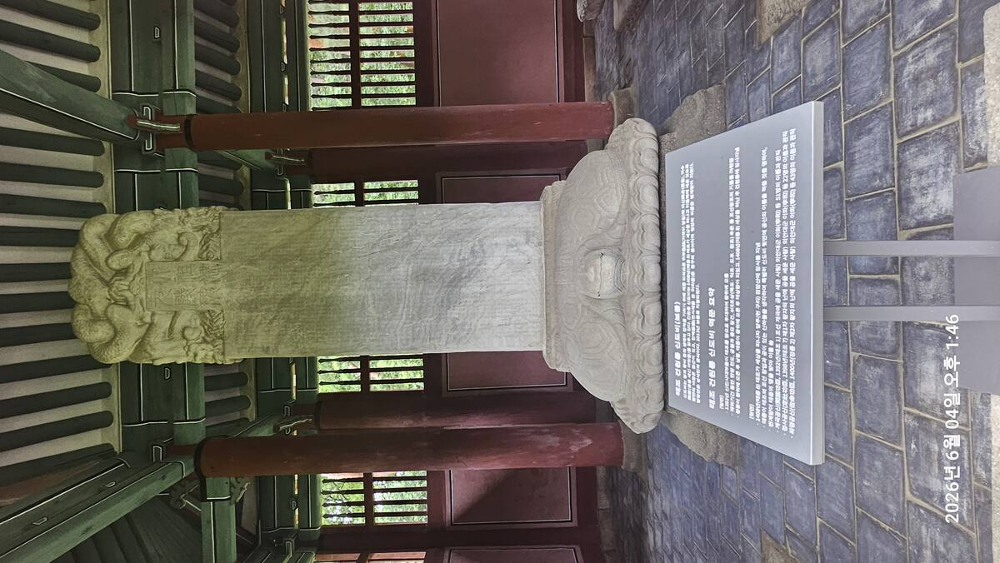
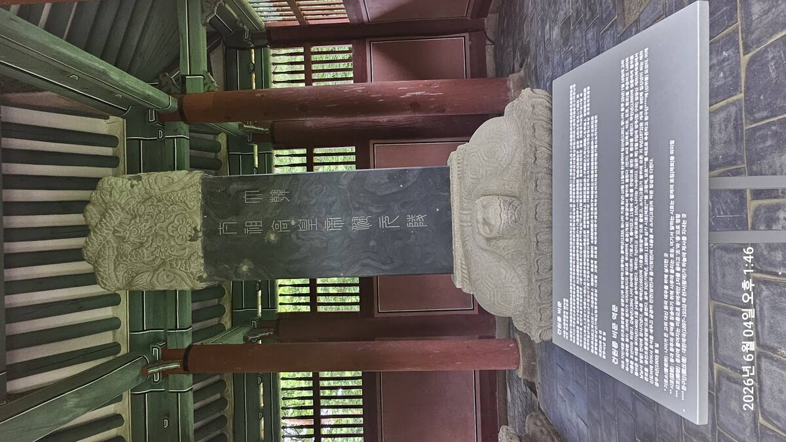

역사 답사 기록 · 경기도 구리
고향을 그리워한 노왕(老王)의 마지막 이야기 — 그리고 조선 500년 왕릉의 원형

Prologue
회암사지에서 이야기는 시작됐다. 권력을 잃고 산속 절에서 5년을 보낸 노왕이 1408년 74세로 생을 마감했다. 아들 태종은 아버지가 그토록 사랑했던 신덕왕후 강씨 곁이 아닌, 한양 동쪽 구리 땅에 아버지를 혼자 묻었다. 그 자리가 건원릉이다. 조선 42기 왕릉 중 첫 번째, 그리고 이후 모든 왕릉이 따르게 될 원형.
Scene 01

동구릉 입구의 '조선왕릉 세계유산' 비석과 표석. 2009년 유네스코 세계문화유산 등재. 13:28
동구릉(東九陵). 한양 동쪽에 있는 아홉 개의 능이라는 뜻이다. 태조의 건원릉이 들어선 이후, 조선 왕실은 이 땅에 계속해서 능을 더했다. 문종, 선조, 현종, 영조, 헌종까지 — 결국 9기 17위가 이 일대에 모였다. 단일 능역으로는 조선 최대 규모다.
2009년 유네스코 세계문화유산 등재. 비석에 새겨진 문장이 눈에 들어온다. "The Royal Tombs of the Joseon Dynasty represent 40 burial grounds of the kings and queens of the Joseon period 1392–1910." 왕조가 끝난 지 100년이 넘은 지금, 600년의 돌들이 이 땅에 그대로 있다.
이곳이 조선 왕실의 선택을 받은 이유가 있다. 한북정맥의 끝자락 검암산이 뒤를 감싸고, 왕숙천이 앞을 흐른다. '왕숙천(王宿川)'이라는 이름 자체가 "왕이 머문 내"라는 뜻 — 태조의 능이 들어서면서 붙여진 지명이다.
Scene 02

건원릉으로 향하는 진입로. 금천교를 건너 참도로 이어지는 흙길. 소나무 숲이 양쪽을 감싼다. 13:40
소나무 숲 사이로 길이 뻗어 있다. 발 아래로 흙의 감촉이 느껴졌다. 왕릉 진입로는 일부러 포장을 하지 않는다. 콘크리트 바닥에 익숙한 발이 여기서는 다른 질감을 읽는다. 이 길이 조금 다른 공간으로 들어가는 중임을 알려주는 방식이다.
건원릉 3구역 공간 구조 — 조선 왕릉 500년 표준
홍살문에서 바라본 참도·정자각·봉분. 태극 문양과 화살촉이 사기(邪氣)를 막는 벽사(辟邪)의 의미를 담고 있다. 이 문 앞에서 한 박자 멈추는 것이 예의다. 13:41
홍살문 앞에서 잠깐 멈췄다. 이 붉은 문 하나가 이쪽과 저쪽을 가른다. 문 안쪽은 왕의 혼백이 있는 공간, 문 바깥은 살아있는 자들의 세계. 그냥 걸어 들어가기가 뭔가 어색했다. 공간이 그렇게 만든다.

건원릉(태조) 안내판과 상설해설도. 좌측 부조 지도, 중앙 한영 설명판, 우측 능제 상세 해설. 13:42
홍살문을 지나 안으로 들어서면 건원릉 안내판이 서 있다. 부조 지도에서 능 전체 배치를 한눈에 볼 수 있고, 우측 상설해설도에는 능침 각 요소의 이름과 역할이 빼곡하다. 현장에서 이 패널을 먼저 읽고 들어가면 눈에 들어오는 것들이 달라진다.
Scene 03

참도(博石길)에서 바라본 정자각(丁字閣). 왼쪽 높은 길이 신도(神道) — 왕의 혼령이 다니는 길. 오른쪽 낮은 길이 어도(御道) — 살아있는 왕이 걷는 길. 13:43
참도(參道) 위에 섰다. 발 앞의 넓적한 박석들이 두 개의 길로 나뉘어 깔려 있다. 왼쪽이 조금 높다. 신도(神道), 왕의 혼령이 다니는 길이다. 살아있는 사람은 그 옆의 낮은 길,어도(御道),로 걸어야 한다. 왕이 죽어서도 가장 높은 곳을 걷는다. 조선의 질서는 죽음 이후에도 계속됐다.
정자각(丁字閣). 위에서 내려다보면 고무래 정(丁) 자 모양이다. 건원릉의 정자각은 조선 왕릉 중 최초로 지어진 것이며, 현재 보물로 지정되어 있다. 이후 모든 조선 왕릉의 정자각이 이 규모와 격식을 따랐다.
그런데 왜 丁 자인가. 고려의 능에는 이런 형식이 없었다. 고려는 영정(影幀, 초상화)을 안치한 능전(陵殿)에서 추모했다. 조선은 달랐다. 영정 대신 신주(神主, 위패)를 중심으로 유교식 제사를 지내도록 바꿨다. 그 제례의 기능에 맞게 설계된 건물이 정자각이다. 한 글자 모양의 건물이 왕조 교체를 상징한다.
결국 건원릉은 고려의 웅장한 석조 예술을 규모는 그대로 물려받으면서, 그 안에 담긴 정신을 불교에서 유교로 바꾼 건물이다. 새 왕조는 돌의 언어를 빌려 새로운 세계관을 쓴 것이다.
Scene 04

예감과 봉분 원경. 6월의 봉분은 잔디가 선명하다. 가을이 되면 봉분이 황금빛 억새로 뒤덮인다. 13:45
정자각 너머로 봉분이 보인다. 앞에는 예감 — 왕릉에서 제사 후 축문을 태우는 돌. 6월의 봉분은 잔디가 선명하게 초록이다. 하지만 이 봉분은 가을이 되면 다른 42기의 왕릉과 전혀 다른 모습이 된다. 황금빛 억새가 온 봉분을 뒤덮는다.
건원릉 최고의 관찰 포인트 — 억새 봉분
조선 왕릉 42기 중 봉분이 잔디가 아닌 억새로 덮인 곳은 건원릉이 유일하다. 태조는 임종 전 유언을 남겼다 — "고향 함흥의 흙과 억새를 가져다 내 무덤을 덮어라." 한양에서 쫓겨나듯 나와 절에서 늙어가면서도, 그는 함흥을 잊지 못했다. 태종은 아버지의 유언을 따라 함흥의 억새와 흙을 가져왔다. 이 억새는 매년 한 번, 한식(寒食)날에만 벌초를 허용한다. 600년 동안.

봉분 정면. 좌우에 석호(石虎)와 석양(石羊)이 배치되어 있다. 건원릉의 석호는 꼬리를 힘차게 말아 올린 용맹한 형상 — 조선 초기 무인 정권의 강건한 기상. 13:47
봉분 좌우에 돌호랑이와 돌양이 웅크리고 있다. 건원릉의 석호는 꼬리를 등 위로 동글게 말아 올린 힘찬 형상이다. 고려 공민왕릉의 온순한 호랑이와는 다르다. 새 나라를 세운 무인의 능답게, 돌 하나에도 기상이 들어 있다.
태조가 죽기 전 가장 가고 싶었던 곳은 함흥이었는데, 왜 그의 무덤은 함흥이 아니라 한양 동북쪽에 만들어졌을까? 이 질문 하나에 왕권, 정치, 효, 풍수, 조선 건국이 모두 연결된다.
— 현장 해설 스크립트 중에서Scene 05


비각 안에 두 개의 비석이 나란히 있다. 하나는 흰 화강암, 하나는 검은 대리석이다. 흰 것이 건원릉 신도비(神道碑, 보물) — 조선 건국과 태조의 공적을 기록한 조선 초기 비석이다. 검은 것은 '太祖高皇帝陵(태조고황제릉)' 비문 — 1900년 대한제국이 고종 황제로 즉위한 뒤 태조를 황제로 추존하면서 세운 것이다.
같은 무덤 앞에 500년의 시차를 두고 세워진 두 비석. 조선 왕에서 대한제국 황제로. 왕조의 운명이 바뀌어도 무덤은 그 자리에 있었다. 두 비석이 나란히 서서 500년을 증언하고 있다.
Scene 06
건원릉 풍수 구조 — 사신사(四神砂) + 명당수
왕릉 해설에서 "배산임수의 명당"이라는 말은 사실 변별력이 없다. 조선 왕릉은 국가 최고의 풍수가들이 수년간 검토하여 선정했기 때문에 기본 점수는 모두 만점이다. 건원릉의 진짜 차별점은 따로 있다.
검암산 주맥이 중간에 곁가지를 치지 않고 태조의 봉분으로 자로 잰 듯이 곧바로 꽂힌다. 뒤에서 밀어주는 힘의 두께가 다른 능과 다르다. 그리고 능 앞으로 물이 들어오는 것은 보이고, 나가는 곳은 산자락에 가려 보이지 않는다. "물이 드는 곳은 보이고 나가는 곳은 보이지 않아야 재물과 기운이 고인다"는 풍수의 정석이다.
동구릉 전체를 하나의 그림으로 보면 더 흥미롭다. 하나의 거대한 명당 줄기에서 9개의 능이 각각 독립된 혈을 점유하고, 서로 시선이 충돌하지 않도록 배치되어 있다. 단일 묘지가 아니라 왕실 묘역 계획도시 같은 개념이다.
Scene 07
건원릉은 단릉이다. 태조가 혼자 묻혀 있다. 42기 왕릉 중 많은 경우 왕과 왕비가 함께 묻히거나(합장릉) 나란히 묻히는데(쌍릉), 왜 태조는 혼자인가.
태조에게는 두 부인이 있었다. 첫째 신의왕후 한씨는 조선 건국 전해인 1391년에 먼저 세상을 떠났다. 개경 근처에 묻혔다가 제릉(齊陵) 호를 받았는데, 지금은 북한 개성에 홀로 있다. 둘째 신덕왕후 강씨는 태조가 가장 사랑했던 처였다. 조선 최초의 왕비. 1396년 세상을 떠나자 태조는 아침저녁으로 곡소리를 들을 수 있도록 경복궁 가까운 한양 도성 안(지금의 정동)에 거대한 능을 만들었다. '정동(貞洞)'이라는 지명이 여기서 나왔다.
태조가 죽자마자, 태종 이방원의 복수가 시작됐다. 이방원에게 신덕왕후는 어머니가 아니었다. 자신을 밀어내고 막내아들을 세자로 앉힌 정적이었다. 태종은 정릉을 도성 밖 지금의 성북구로 강제 이장했다. 이장 과정에서 정릉의 병풍석들을 청계천 광통교의 교각으로 써버렸다. 모든 백성이 밟고 지나다니도록. 신덕왕후는 후궁으로 격하되어 종묘에도 신주가 오르지 못했다. 이후 273년이 지난 현종 때(1669년)에야 겨우 왕비로 복권됐다.
태조가 그토록 사랑했던 신덕왕후 강씨 곁에 묻히기를 원했으나, 아들 이방원은 아버지의 유언을 무시하고 건원릉에 태조를 혼자 묻었다. 그래서 이 무덤은 처음부터 쓸쓸하다.
— 태조·신의왕후·신덕왕후, 동구릉(구리)·제릉(개성)·정릉(서울 성북구)으로 셋이 흩어졌다Closing
건원릉에서 가장 오래 남는 장면을 꼽으라면, 정자각 너머로 봉분이 보이는 그 구도다. 홍살문 → 참도 → 정자각 → 봉분. 이 일직선의 시퀀스가 회암사지의 남북 종축처럼, 낮은 곳에서 높은 곳으로, 속세에서 성역으로 이어진다. 회암사지에서 봤던 그 폐사지의 공간 언어와 같은 문법이 여기서도 작동하고 있다.
조선을 세운 사람이 회암사지의 주춧돌 위에 앉아 있었고, 그 사람이 죽어서 이 봉분 아래 누웠다. 두 장소를 걸으면서, 한 사람의 생애가 공간으로 읽혔다. 시작은 위화도 회군이었고, 끝은 함흥의 억새였다.
건원릉은 "최고의 명당"이 아니라, "조선의 시작을 상징하는 왕릉이며, 고향을 그리워한 노왕의 마지막 이야기"다. 이후 조선 41기의 왕릉이 모두 이 형식을 따랐다. 홍살문, 참도, 정자각, 능침. 태조가 잠든 이 구조가 500년 동안 조선 왕릉의 문법이 되었다.
태조는 그렇게 홀로 묻혔다. 그러나 그의 얼굴만은 다른 곳에 남아 있었다. 그 얼굴을 만나러 가는 곳이 경기전이다.
답사 정보 / Visitor Info